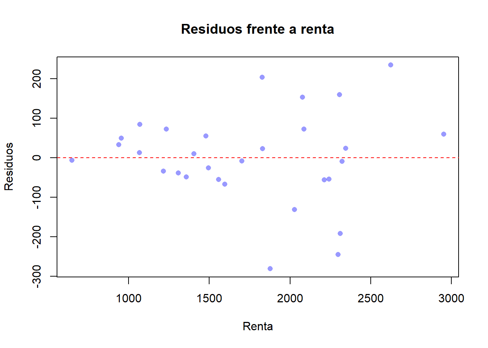

Code
library(readxl)
library(lmtest)
library(sandwich)Estado: portado 2026-05-18. Revisión editorial: pendiente. Prosa recuperada de la versión inglesa (G4).
Al finalizar este capítulo el lector debería ser capaz de:
¿Por qué los intervalos de confianza MCO convencionales subestiman la incertidumbre real en una regresión salarial donde los salarios altos están muy dispersos — y qué deberíamos hacer al respecto?
Una regresión del salario por hora sobre los años de educación entrega una estimación puntual limpia del rendimiento de la escolarización. Pero la dispersión de los salarios alrededor de la recta de regresión no es la misma para quienes abandonan la secundaria y para los doctorados: los graduados se reparten en un rango salarial mucho más amplio. La fórmula MCO de manual para el error estándar de \(\hat\beta_1\) supone que la dispersión es constante. Cuando no lo es, los errores estándar reportados son incorrectos, los estadísticos \(t\) son incorrectos y las recomendaciones de política construidas sobre ellos son incorrectas. Este capítulo muestra cómo diagnosticar el problema y cómo arreglarlo.
En el Capítulo 4 enumeramos los supuestos RLM.1–RLM.6 del modelo de regresión lineal múltiple que justifican MCO. El supuesto de homocedasticidad RLM.5 establece que la varianza del error es la misma para cualquier valor de los regresores:
\[ \operatorname{Var}(u_i \mid \mathbf{x}_i) \;=\; \sigma^2, \qquad i = 1, \dots, n. \]
Cuando RLM.5 falla, la varianza condicional depende de \(\mathbf{x}_i\):
\[ \operatorname{Var}(u_i \mid \mathbf{x}_i) \;=\; \sigma_i^2, \]
y se dice que el error es heterocedástico. La raíz griega ayuda a recordarlo: homo-cedástico significa «misma dispersión»; hetero-cedástico significa «dispersión distinta».
Los trabajadores con solo educación primaria en un mercado laboral europeo típico ganan entre aproximadamente 15.000 y 25.000 euros anuales — un rango estrecho. Los graduados universitarios ganan entre 20.000 y 200.000 euros — un rango mucho más amplio. La varianza condicional de los salarios crece claramente con la educación. El término de error en una ecuación salarial \(\text{salario}_i = \beta_0 + \beta_1\,\text{educ}_i + u_i\) exhibe por tanto heterocedasticidad: \(\operatorname{Var}(u_i \mid \text{educ}_i)\) crece con educ.
La heterocedasticidad no es un problema de identificación. Mientras se mantenga \(\mathbb{E}[u_i \mid \mathbf{x}_i] = 0\) (supuesto RLM.4), el significado de \(\beta_j\) como efecto ceteris paribus sobrevive. Lo que la heterocedasticidad rompe es la inferencia — la maquinaria que convierte una estimación puntual \(\hat\beta_j\) en un intervalo de confianza o un contraste de hipótesis.
La heterocedasticidad afecta a \(\operatorname{Var}(u_i \mid \mathbf{x}_i)\); el sesgo por omisión de variables afecta a \(\mathbb{E}[u_i \mid \mathbf{x}_i]\). El primero deja \(\hat\beta_j\) insesgado y solo daña los errores estándar. El segundo sesga el propio \(\hat\beta_j\). Los dos problemas requieren herramientas distintas, y un mismo conjunto de datos puede sufrir uno, otro, ambos o ninguno.
La heterocedasticidad es la regla, no la excepción, en los datos microeconómicos de sección cruzada, al menos por tres razones:
Estas son precisamente las estructuras de datos con las que trabajan los economistas aplicados, lo que explica por qué los errores estándar robustos se han convertido en la práctica por defecto en la econometría moderna.
Supongamos que RLM.1–RLM.4 se mantienen y que solo RLM.5 falla. Tres enunciados resumen las consecuencias:
Si recogemos las varianzas condicionales en la diagonal de una matriz \(\boldsymbol{\Omega} = \operatorname{diag}(\sigma_1^2, \dots, \sigma_n^2)\), la varianza condicional correcta del estimador MCO es
\[ \operatorname{Var}(\hat{\boldsymbol\beta} \mid \mathbf{X}) \;=\; (\mathbf{X}'\mathbf{X})^{-1}\,\mathbf{X}'\boldsymbol{\Omega}\mathbf{X}\,(\mathbf{X}'\mathbf{X})^{-1}. \]
El «pan» \((\mathbf{X}'\mathbf{X})^{-1}\) rodea a la «carne» \(\mathbf{X}'\boldsymbol{\Omega}\mathbf{X}\) — y por eso esta forma se conoce universalmente como estimador sándwich. La fórmula MCO habitual simplemente sustituye \(\boldsymbol{\Omega}\) por \(\sigma^2 \mathbf{I}_n\) y colapsa el sándwich en una sola loncha. El estimador White / HC1 que usamos en el §7.4 estima \(\boldsymbol{\Omega}\) por \(\operatorname{diag}(\hat u_1^2, \dots, \hat u_n^2)\), con una corrección de grados de libertad para muestras finitas.
En resumen: la heterocedasticidad es un problema de los errores estándar, no de los coeficientes. La solución pasa por reparar la maquinaria inferencial (errores estándar robustos) o, si nos podemos permitir el modelado adicional, por usar un estimador que explote la estructura de varianzas (MCP).
Describimos un diagnóstico informal y dos contrastes formales. El gráfico informal es barato y debería ser lo primero que se mira; los contrastes formales proporcionan una regla de decisión estructurada.
Después de estimar el modelo por MCO, se calculan los residuos \(\hat u_i = y_i - \hat y_i\) y se representan frente a los valores ajustados \(\hat y_i\) o frente a cada regresor \(x_j\). La huella visual de la heterocedasticidad es una forma de abanico o cuña: la dispersión vertical de la nube de residuos se ensancha (o se estrecha) a medida que avanzamos por el eje horizontal. Los residuos al cuadrado \(\hat u_i^2\) frente a \(x_j\) hacen el patrón aún más obvio, porque ya no importa el signo del residuo.
Si la nube parece una banda horizontal de espesor aproximadamente constante, la homocedasticidad es plausible. Si se abre — como típicamente ocurre cuando \(x_j\) es renta, tamaño de la empresa o cualquier otra variable de «escala» — la heterocedasticidad es la sospechosa natural.
El test de Goldfeld–Quandt (GQ) es apropiado cuando se sospecha que la heterocedasticidad está impulsada por un regresor concreto. La idea es simple: dividir la muestra en un grupo de \(x\) bajo y un grupo de \(x\) alto, y comparar las varianzas residuales de las dos submuestras.
Pasos.
\[ F \;=\; \frac{\operatorname{SCR}_2 \,/\, \operatorname{gl}_2}{\operatorname{SCR}_1 \,/\, \operatorname{gl}_1}\;\sim\;F_{\operatorname{gl}_2,\,\operatorname{gl}_1} \quad \text{bajo } H_0. \]
Hipótesis. \(H_0\): homocedasticidad. \(H_1\): \(\operatorname{Var}(u)\) crece con \(x\) (la alternativa más habitual). Se rechaza \(H_0\) cuando \(F\) excede el valor crítico de la cola superior de la distribución \(F\).
El test GQ fue históricamente popular en muestras pequeñas y resulta intuitivo, pero exige al analista comprometerse con una única variable de ordenación y con una regla de partición de la muestra. El test de Breusch–Pagan, que presentamos a continuación, prescinde de ambos compromisos.
El test de Breusch–Pagan (BP) detecta heterocedasticidad relacionada con cualquiera de los regresores. Es el contraste formal de cabecera en el trabajo aplicado moderno.
Pasos.
\[ \hat u_i^2 \;=\; \gamma_0 + \gamma_1 x_{1i} + \gamma_2 x_{2i} + \dots + \gamma_k x_{ki} + v_i. \]
\[ \operatorname{BP} \;=\; n \cdot R^2_{\text{aux}} \;\sim\;\chi^2_{k}\quad\text{bajo } H_0, \]
donde \(R^2_{\text{aux}}\) es el coeficiente de determinación de la regresión auxiliar y \(k\) es el número de coeficientes pendiente de esa regresión.
Hipótesis. \(H_0: \gamma_1 = \gamma_2 = \dots = \gamma_k = 0\) (homocedasticidad). Se rechaza cuando \(\operatorname{BP} > \chi^2_{k,\alpha}\).
La intuición es directa: si el residuo al cuadrado se explica sistemáticamente por los regresores, entonces \(\operatorname{Var}(u \mid \mathbf{x})\) varía con \(\mathbf{x}\), que es la definición de heterocedasticidad. Un primo cercano — el test de White — añade cuadrados y productos cruzados de los regresores a la regresión auxiliar y detecta así formas más generales de heterocedasticidad, a costa de grados de libertad.
No conviene ejecutar GQ, luego BP, luego White, y reportar el que rechaza «primero». Es una forma de \(p\)-hacking. Elige un test basándote en lo que sospechas antes de mirar los residuos, o — siguiendo la práctica moderna — omite directamente la fase de contraste y reporta errores estándar robustos por defecto.
Existen dos soluciones principales, adaptadas a dos estados distintos del conocimiento.
Supongamos que conocemos (o estamos dispuestos a modelar) la forma de la varianza condicional:
\[ \operatorname{Var}(u_i \mid \mathbf{x}_i) \;=\; \sigma^2 \, h(\mathbf{x}_i), \]
donde \(h(\mathbf{x}_i) > 0\) es una función conocida de los regresores. Un ejemplo típico es \(h(\mathbf{x}_i) = x_i\) cuando la varianza es proporcional a una variable de escala como la renta.
Dividamos cada término de la regresión por \(\sqrt{h(\mathbf{x}_i)}\):
\[ \frac{y_i}{\sqrt{h(\mathbf{x}_i)}} \;=\; \beta_0 \frac{1}{\sqrt{h(\mathbf{x}_i)}} + \beta_1 \frac{x_{i}}{\sqrt{h(\mathbf{x}_i)}} + \frac{u_i}{\sqrt{h(\mathbf{x}_i)}}. \]
El nuevo error \(u_i^\ast = u_i / \sqrt{h(\mathbf{x}_i)}\) tiene varianza constante:
\[ \operatorname{Var}(u_i^\ast) \;=\; \frac{\sigma^2 h(\mathbf{x}_i)}{h(\mathbf{x}_i)} \;=\; \sigma^2. \]
Aplicar MCO al modelo transformado equivale a aplicar mínimos cuadrados ponderados: minimizar
\[ \sum_{i=1}^{n} \frac{1}{h(\mathbf{x}_i)} \bigl(y_i - \beta_0 - \beta_1 x_{i} - \dots\bigr)^2. \]
Cada observación recibe un peso \(w_i = 1 / h(\mathbf{x}_i)\). Las observaciones con varianza alta reciben menos peso; las observaciones con varianza baja reciben más. Cuando los pesos están correctamente especificados, MCP es ELIO: tiene menor varianza que MCO sin dejar de ser insesgado.
MCP solo es ELIO bajo pesos correctamente especificados. Con pesos equivocados puede ser menos eficiente que MCO, y sus errores estándar vuelven a ser incorrectos. Si solo se tiene una idea vaga de la estructura de varianzas, conviene preferir errores estándar robustos.
Cuando se desconoce la forma de \(h(\mathbf{x})\), la solución más segura es mantener MCO para las estimaciones puntuales y calcular errores estándar consistentes a la heterocedasticidad (HC), también llamados robustos o de White, en honor a (White 1980).
En el caso de regresión simple, con \(\hat u_i\) el residuo MCO,
\[ \operatorname{ee}_{\text{robusto}}(\hat\beta_1) \;=\; \sqrt{\,\dfrac{\displaystyle\sum_{i=1}^{n} (x_i - \bar x)^2 \,\hat u_i^2}{\Bigl[\displaystyle\sum_{i=1}^{n} (x_i - \bar x)^2\Bigr]^2}\,}. \]
La expresión matricial general es el estimador sándwich del §7.2 con \(\boldsymbol{\Omega}\) reemplazada por \(\operatorname{diag}(\hat u_1^2, \dots, \hat u_n^2)\). Existen varias variantes (HC0, HC1, HC2, HC3) que difieren en su corrección de grados de libertad para muestras finitas; HC1 es la opción por defecto de la orden , robust de Stata y es la habitual en el trabajo aplicado publicado.
Los errores estándar robustos dejan inalteradas las estimaciones puntuales \(\hat\beta_j\). Solo se corrige la varianza — y por tanto los estadísticos \(t\), los \(p\)-valores y los intervalos de confianza.
Esta práctica corresponde a la Práctica 8 del curso. El conjunto de datos het_datos.xlsx es una sección cruzada propia de consumo y renta a nivel de hogar, dividida en tres tramos de renta (grupo \(\in \{1, 2, 3\}\), de bajo a alto). Estimamos una regresión simple de tipo curva de Engel del consumo sobre la renta, detectamos heterocedasticidad y a continuación la corregimos por dos vías — primero por MCP y después con errores estándar robustos.
Usamos tres paquetes: readxl para leer el fichero Excel, lmtest para los tests de Breusch–Pagan y Goldfeld–Quandt y para coeftest(), y sandwich para la matriz de varianzas–covarianzas robusta.
library(readxl)
library(lmtest)
library(sandwich)La práctica original utiliza una ruta relativa (read_excel("het_datos.xlsx")) tras hacer setwd() en la carpeta de la Práctica 8. Para que el libro sea portable mantenemos ese estilo pero documentamos la ruta absoluta utilizada en tiempo de compilación. Adapta la ruta a tu equipo.
het_path <- file.path(
"..", "..", "..", "..", "SPANISH", "Practicas", "2025", "Tutorial 8", "het_datos.xlsx"
)
het_datos <- read_excel(het_path)
# Construimos un indicador de tercil de renta para la división de Goldfeld-Quandt:
# grupo == 1 = tercio bajo, 2 = tercio medio, 3 = tercio alto.
het_datos$grupo <- as.integer(cut(het_datos$renta,
breaks = quantile(het_datos$renta,
probs = c(0, 1/3, 2/3, 1)),
include.lowest = TRUE))
str(het_datos)tibble [30 × 4] (S3: tbl_df/tbl/data.frame)
$ id : num [1:30] 1 2 3 4 5 6 7 8 9 10 ...
$ consumo: num [1:30] 433 663 690 727 800 ...
$ renta : num [1:30] 649 939 956 1067 1071 ...
$ grupo : int [1:30] 1 1 1 1 1 1 1 1 1 1 ...head(het_datos)# A tibble: 6 × 4
id consumo renta grupo
<dbl> <dbl> <dbl> <int>
1 1 433. 649. 1
2 2 663. 939. 1
3 3 690. 956. 1
4 4 727. 1067. 1
5 5 800. 1071. 1
6 6 777. 1215. 1El xlsx original incluye renta y consumo. Añadimos una variable derivada grupo igual al tercil de la renta (1 = bajo, 2 = medio, 3 = alto) para que el test de Goldfeld–Quandt pueda dividir la muestra a continuación.
modelo1 <- lm(consumo ~ renta, data = het_datos)
summary(modelo1)
Call:
lm(formula = consumo ~ renta, data = het_datos)
Residuals:
Min 1Q Median 3Q Max
-280.684 -52.408 2.257 58.517 234.525
Coefficients:
Estimate Std. Error t value Pr(>|t|)
(Intercept) 13.94848 70.77718 0.197 0.845
renta 0.65532 0.03864 16.961 2.91e-16 ***
---
Signif. codes: 0 '***' 0.001 '**' 0.01 '*' 0.05 '.' 0.1 ' ' 1
Residual standard error: 117.5 on 28 degrees of freedom
Multiple R-squared: 0.9113, Adjusted R-squared: 0.9081
F-statistic: 287.7 on 1 and 28 DF, p-value: 2.91e-16El coeficiente pendiente \(\hat\beta_1\) es la propensión marginal media a consumir sobre la renta. Para comprobar la homocedasticidad de forma informal, representamos los residuos MCO frente a renta:
plot(het_datos$renta, resid(modelo1),
xlab = "Renta",
ylab = "Residuos",
main = "Residuos frente a renta",
pch = 16,
col = rgb(0, 0, 1, 0.4))
abline(h = 0, lty = 2, col = "red")
La nube se abre al crecer la renta: los residuos forman un abanico. Es exactamente la forma de cuña que avisamos en el §7.3.1.
Estimamos el modelo por separado en las submuestras de renta baja (grupo == 1) y de renta alta (grupo == 3), y comparamos las dos varianzas residuales.
modelo_bajo <- lm(consumo ~ renta, data = het_datos, subset = grupo == 1)
modelo_alto <- lm(consumo ~ renta, data = het_datos, subset = grupo == 3)
SCR_bajo <- sum(residuals(modelo_bajo)^2)
SCR_alto <- sum(residuals(modelo_alto)^2)
n_bajo <- nobs(modelo_bajo)
n_alto <- nobs(modelo_alto)
k <- length(coef(modelo_bajo)) # constante + pendiente
gl_bajo <- n_bajo - k
gl_alto <- n_alto - k
F_GQ <- (SCR_alto / gl_alto) / (SCR_bajo / gl_bajo)
F_crit <- qf(0.95, gl_alto, gl_bajo)
p_gq <- 1 - pf(F_GQ, gl_alto, gl_bajo)
c(F = F_GQ, F_crit_5pct = F_crit, p_valor = p_gq) F F_crit_5pct p_valor
9.582976952 3.438101233 0.002205927 Si F_GQ está bastante por encima de F_crit_5pct — o, equivalentemente, si el \(p\)-valor está por debajo de \(0{,}05\) — rechazamos la homocedasticidad en favor de «la varianza crece con la renta».
bptest())La regresión auxiliar de los residuos al cuadrado sobre la renta nos da \(R^2_{\text{aux}}\); el estadístico BP es \(n \cdot R^2_{\text{aux}}\) y sigue una \(\chi^2_1\) bajo \(H_0\) (hay un único regresor, renta).
res <- residuals(modelo1)
res_sq <- res^2
aux <- lm(res_sq ~ renta, data = het_datos)
n <- nobs(modelo1)
R2_aux <- summary(aux)$r.squared
BP_stat <- n * R2_aux
chi_crit <- qchisq(0.95, df = 1)
p_bp <- 1 - pchisq(BP_stat, df = 1)
c(BP_manual = BP_stat, chi2_1_5pct = chi_crit, p_valor = p_bp) BP_manual chi2_1_5pct p_valor
4.86609184 3.84145882 0.02738946 La versión del paquete entrega la misma respuesta en una línea:
bptest(modelo1)
studentized Breusch-Pagan test
data: modelo1
BP = 4.8661, df = 1, p-value = 0.02739Un \(p\)-valor pequeño (por debajo de \(0{,}05\)) significa que rechazamos la homocedasticidad. Los dos cálculos deberían coincidir salvo redondeo.
Supongamos \(\operatorname{Var}(u_i \mid \text{renta}_i) \propto \text{renta}_i\), de modo que \(h(\text{renta}_i) = \text{renta}_i\). Los pesos MCP son \(w_i = 1 / \text{renta}_i\).
mcp <- lm(consumo ~ renta, data = het_datos, weights = 1 / renta)
summary(mcp)
Call:
lm(formula = consumo ~ renta, data = het_datos, weights = 1/renta)
Weighted Residuals:
Min 1Q Median 3Q Max
-6.4405 -1.1894 0.0547 1.3568 4.7847
Coefficients:
Estimate Std. Error t value Pr(>|t|)
(Intercept) 34.45170 55.08024 0.625 0.537
renta 0.64357 0.03354 19.185 <2e-16 ***
---
Signif. codes: 0 '***' 0.001 '**' 0.01 '*' 0.05 '.' 0.1 ' ' 1
Residual standard error: 2.607 on 28 degrees of freedom
Multiple R-squared: 0.9293, Adjusted R-squared: 0.9268
F-statistic: 368.1 on 1 and 28 DF, p-value: < 2.2e-16Para comprobar si los pesos fueron bien elegidos, repetimos el test de heterocedasticidad sobre el ajuste MCP:
bptest(mcp)
studentized Breusch-Pagan test
data: mcp
BP = 0.0056423, df = 1, p-value = 0.9401Si el test BP ya no rechaza (\(p\)-valor grande), la estructura de varianzas supuesta era aproximadamente correcta y MCP ha cumplido su función.
La solución más segura — válida incluso cuando no se tiene idea de la forma de \(h(\mathbf{x})\) — consiste en mantener las estimaciones MCO y recalcular los errores estándar con vcovHC():
coeftest(modelo1, vcov = vcovHC(modelo1, type = "HC1"))
t test of coefficients:
Estimate Std. Error t value Pr(>|t|)
(Intercept) 13.948477 49.970518 0.2791 0.7822
renta 0.655317 0.035729 18.3411 <2e-16 ***
---
Signif. codes: 0 '***' 0.001 '**' 0.01 '*' 0.05 '.' 0.1 ' ' 1Las estimaciones puntuales son idénticas a las de summary(modelo1). Solo cambian los errores estándar, los estadísticos \(t\) y los \(p\)-valores.
Una forma limpia de comunicar el resultado es poner los dos errores estándar lado a lado y reportar su cociente.
ee_ols <- summary(modelo1)$coefficients[, "Std. Error"]
ee_robust <- sqrt(diag(vcovHC(modelo1, type = "HC1")))
comparacion <- data.frame(
EE_MCO = round(ee_ols, 4),
EE_Robust = round(ee_robust, 4),
Ratio = round(ee_robust / ee_ols, 3)
)
comparacion EE_MCO EE_Robust Ratio
(Intercept) 70.7772 49.9705 0.706
renta 0.0386 0.0357 0.925Si el cociente de la última columna es claramente mayor que \(1\), los errores estándar MCO estaban infraestimando la incertidumbre — exactamente el diagnóstico que dimos en el §7.2.
La finalidad de esta tabla no es «elegir» una columna sobre la otra — los coeficientes son los mismos en ambas. La tabla indica cuánto ha distorsionado la heterocedasticidad al error estándar MCO. Un cociente próximo a \(1{,}0\) significa que MCO estaba bien aun cuando RLM.5 técnicamente fallara; un cociente por encima de \(1{,}5\) significa que MCO habría llevado a sobre-rechazar la nula. En cualquiera de los dos casos, los errores robustos son ahora la columna estándar a reportar.
Seis preguntas cortas de opción múltiple. Intenta cada una antes de abrir la respuesta.
La heterocedasticidad en un modelo de regresión lineal significa:
Respuesta: B. La heterocedasticidad es, por definición, el fallo de RLM.5: la varianza condicional de \(u\) varía con los regresores. Las otras opciones describen RLM.4, autocorrelación y multicolinealidad respectivamente.
Bajo heterocedasticidad (manteniéndose RLM.1–RLM.4), MCO es:
Respuesta: C. La insesgadez y la consistencia de \(\hat\beta_j\) no requieren RLM.5. Sí la requieren la eficiencia (ELIO) y la validez de la fórmula de manual del error estándar.
¿Por qué decimos que la heterocedasticidad es un problema de inferencia y no de identificación?
Respuesta: C. La interpretación causal de \(\hat\beta_j\) sobrevive a la heterocedasticidad. Lo que falla es la maquinaria que convierte la estimación en un contraste \(t\) o un intervalo de confianza.
El test de Breusch–Pagan corre una regresión auxiliar de:
Respuesta: B. El test BP regresiona los residuos al cuadrado sobre los regresores; bajo \(H_0\) de homocedasticidad, \(n R^2_{\text{aux}}\) es asintóticamente \(\chi^2_k\).
El test de Goldfeld–Quandt compara:
Respuesta: B. GQ parte la muestra según la variable sospechosa, ajusta la regresión en cada mitad y usa el cociente de las medias de los cuadrados de los residuos como estadístico \(F\).
¿Cuándo conviene preferir Mínimos Cuadrados Ponderados a MCO con errores estándar robustos?
Respuesta: A. MCP solo es ELIO bajo pesos correctamente especificados. Con una estructura de varianzas desconocida, MCO más errores robustos es la opción por defecto más segura; con un modelo creíble para \(h(\mathbf{x})\), MCP compra eficiencia.
Ejercicio 7.1 ★ — Detectar heterocedasticidad. Para cada una de las siguientes regresiones, predice si el término de error será probablemente heterocedástico y explica el motivo en una frase.
Ejercicio 7.2 ★ — Leer una salida BP. Un estudiante ejecuta bptest(lm(consumo ~ renta, data = het_datos)) y obtiene un estadístico de aproximadamente \(9{,}8\) con \(1\) grado de libertad y \(p\)-valor \(\approx 0{,}002\).
Ejercicio 7.3 ★★ — Goldfeld–Quandt a mano. Supón que para una regresión de consumo sobre renta obtienes \(\operatorname{SCR}_{\text{bajo}} = 120\) con \(\operatorname{gl}_{\text{bajo}} = 28\) observaciones en la submuestra de renta baja, y \(\operatorname{SCR}_{\text{alto}} = 540\) con \(\operatorname{gl}_{\text{alto}} = 28\) en la submuestra de renta alta. El valor crítico al \(5\%\) de \(F_{28,28}\) es aproximadamente \(1{,}88\).
La respuesta completa se ofrece en la Edición del Instructor.
Ejercicio 7.4 ★★ — Por qué el sándwich. Demuestra que bajo homocedasticidad (\(\boldsymbol{\Omega} = \sigma^2 \mathbf{I}_n\)), la varianza sándwich
\[ (\mathbf{X}'\mathbf{X})^{-1}\mathbf{X}'\boldsymbol{\Omega}\mathbf{X}(\mathbf{X}'\mathbf{X})^{-1} \]
se reduce a la varianza MCO habitual \(\sigma^2(\mathbf{X}'\mathbf{X})^{-1}\). Usa este resultado para argumentar, en un párrafo, que el error estándar robusto nunca es peor asintóticamente que el error estándar MCO.
La respuesta completa se ofrece en la Edición del Instructor.
Ejercicio 7.5 ★★ — MCP como MCO transformado. Considera el modelo de regresión simple \(y_i = \beta_0 + \beta_1 x_i + u_i\) con \(\operatorname{Var}(u_i \mid x_i) = \sigma^2 x_i\) (siendo \(x_i > 0\)).
La respuesta completa se ofrece en la Edición del Instructor.
Ejercicio 7.6 ★★★ — Extensión de la práctica. Usando het_datos.xlsx de la Práctica 8:
renta.La respuesta completa se ofrece en la Edición del Instructor.